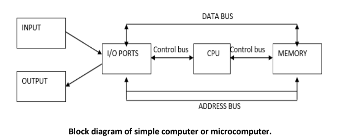
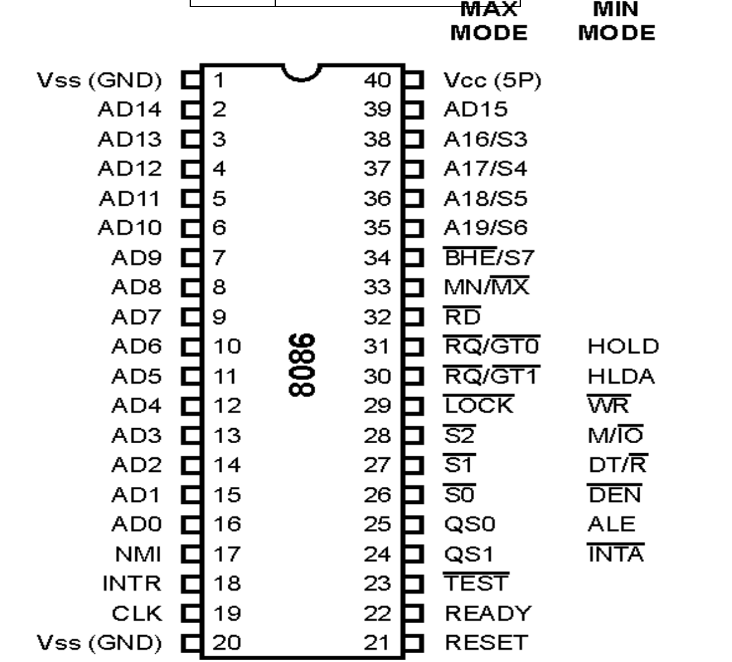
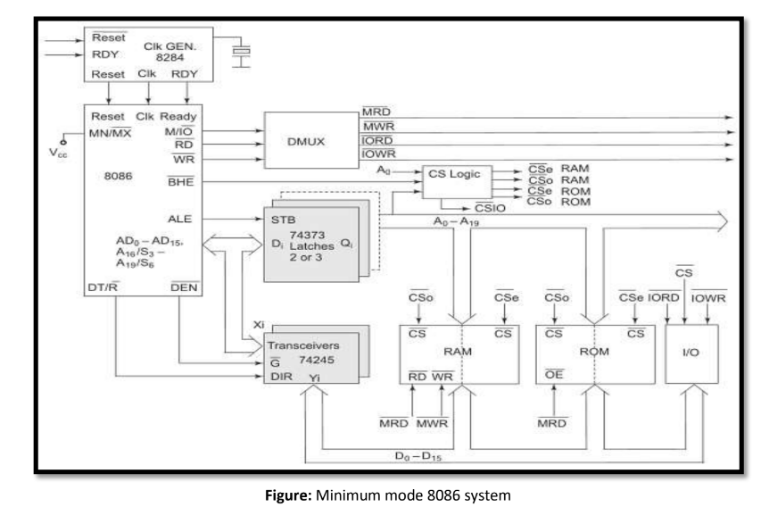
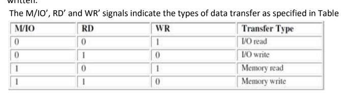
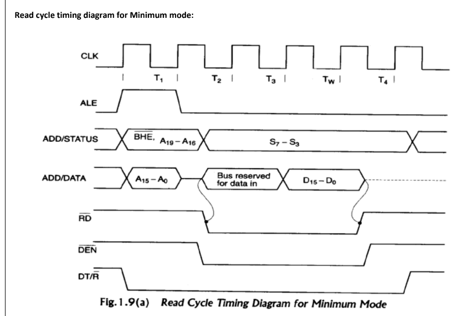
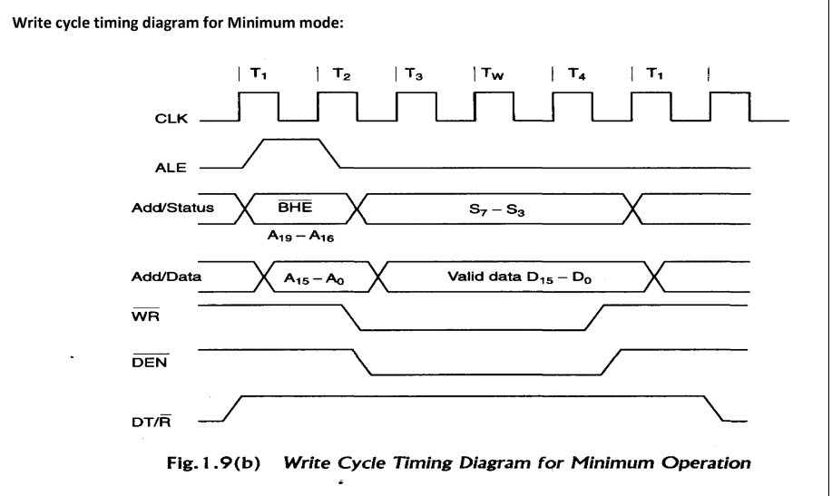
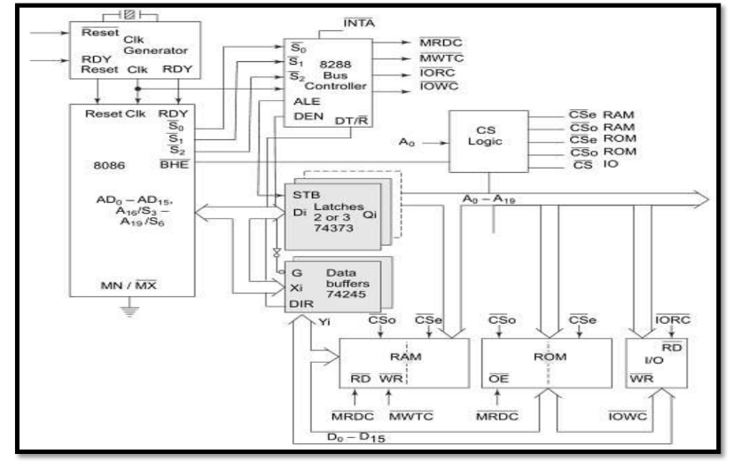
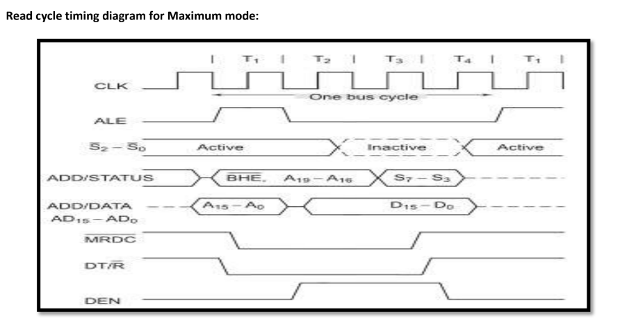
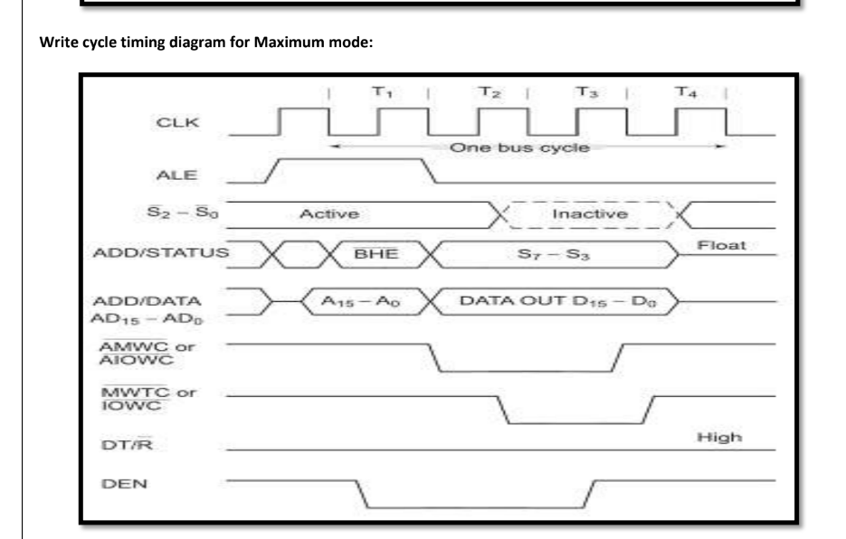

EE 6502 / ECE - MICROPROCESSORS & MICROCONTROLLERS
UNIT-I: 8086 MICROPROCESSOR MASTER GUIDE
1. INTRODUCTION TO MICROPROCESSORS & COMPUTERS
Overview of a Simple Microcomputer
A simple digital microcomputer consists of three primary functional components connected via three parallel sets of conductors called Buses:

Figure 1.1: Functional Block Diagram of a Simple Microcomputer (CPU, Memory, I/O Ports & System Buses)
CPU (Central Processing Unit): Controls all system activity. Fetches binary-coded instructions from memory, decodes them, and carries out operations.
Houses an Arithmetic Logic Unit (ALU) (ADD, SUB, AND, OR, XOR, Inversion), an address program counter, internal general-purpose temporary registers, and control bus timing circuitry.
Memory: Mix of semiconductor RAM (read/write runtime memory) and ROM (permanent boot firmware).
Dual purposes: (a) stores sequential instruction opcode streams, and (b) stores binary data operands.
Input/Output (I/O) Section: Interfaces the computer with external peripherals (keyboards, displays, sensors).
The physical IC buffers interfacing internal buses to peripherals are called I/O Ports.
The Three System Buses
Address Bus (Unidirectional): Lines along which the CPU transmits physical memory or I/O port addresses.
With N address lines, the CPU addresses 2N distinct locations (e.g., 8086 with 20 address lines = 220 = 1,048,576 bytes = 1 MB).
Data Bus (Bidirectional): Transfers data operands between CPU and memory/ports. CPU both reads and writes over this bus. Multiple devices share it, but only one is enabled at a time.
Control Bus: Carries timing and control strobes (e.g., MEMR, MEMW, IOR, IOW) dispatched by the CPU to synchronize memory and I/O access.
Bus Control Logic: Generates bus read/write and memory/IO strobes.
Pipelining & The 6-Byte Instruction Queue
Pipelining Definition: Fetching the next sequential instruction while the current instruction is being executed.
Asynchronous Fetch Trigger: The BIU fills the queue as long as it has room, initiating a fetch whenever at least two bytes in the queue become vacant.
Branch Flushing: Branch instructions (JMP, CALL, RET) cause the queue to be flushed and reloaded starting from the target branch address.
Why 6 Bytes? The longest valid instruction in the 8086 set is 6 bytes long. A 6-byte queue guarantees that at least one full instruction can always be prefetched.
Enter any 16-bit segment and offset hexadecimal values to compute the generated 20-bit address:
Loading calculator...
7. 12 ADDRESSING MODES OF 8086
Addressing modes describe how operands or branch target addresses are specified. Classified into Sequential Control Flow (8 modes) and Control Transfer (4 modes):
📂 Interactive Addressing Modes Quick Reference
1. Immediate Addressing Mode
Classification: Sequential Control Flow
The operand data is a constant number supplied directly within the instruction stream immediately following the opcode.
MOV AX, 0005H ; 0005H is immediate 16-bit constant data loaded into AX
📝 Core University Exam Problem
The contents of registers are given below. Form effective and physical addresses for different addressing modes:
Offset (disp)=5000H, [AX]=1000H, [BX]=2000H, [SI]=3000H, [DI]=4000H, [BP]=5000H, [SP]=6000H, [CS]=0000H, [DS]=1000H, [SS]=2000H, [IP]=7000H
🎯 Interactive Effective Address Exam Problem Solver
Click any addressing mode preset below to view the step-by-step hex calculation:
Select a problem preset above to see the calculation breakdown.
9. 8086 PIN DIAGRAM & SIGNAL DESCRIPTIONS

Figure 9.1: 8086 40-Pin DIP Configuration showing Dual Pin Functions in Minimum Mode vs Maximum Mode
The 8086 is packaged in a 40-pin Dual In-line Package (DIP). Pins 24 to 31 have dual functions depending on the level applied to pin 33 (MN/MX):
Key Pin Function Decoding Tables
Table 9.1: Data Bus & Memory Bank Selection (BHE and A0)
BHE
A0
Transfer Characteristics
0
0
Whole 16-bit word transfer across D0–D15 (Even and Odd banks enabled).
0
1
Upper byte transfer (D8–D15) from or to an odd address (Odd bank enabled).
1
0
Lower byte transfer (D0–D7) from or to an even address (Even bank enabled).
1
1
None (No data bus transfer).
Table 9.2: Segment Register Status (S4 and S3)
S4
S3
Segment Register Accessed
0
0
Extra Segment (ES)
0
1
Stack Segment (SS)
1
0
Code Segment (CS) or No Segment
1
1
Data Segment (DS)
10. MINIMUM MODE SYSTEM & TIMING DIAGRAMS
Minimum Mode System Architecture (MN/MX = +5V)
In minimum mode, the 8086 functions as a uniprocessor. It generates all system bus control signals directly without requiring an external bus controller.

Figure 10.1: Minimum Mode 8086 System Organization (8284 Clock Generator, 74373 Latches, 74245 Transceivers, RAM, ROM, and I/O)
8284 Clock Generator: Generates the master CLK with a 33% duty cycle, synchronizes external RESET and READY inputs.
74LS373 / 8282 Address Latches (3 units): D-type flip-flop latches that demultiplex the 20-bit address from AD0–AD15 and A16–A19 during the negative edge of ALE.
74LS245 / 8286 Bidirectional Transceivers (2 units): Data bus amplifiers controlled by DEN (Data Enable) and DT/R (direction control: 1=Transmit, 0=Receive).
Data Transfer Control Signals

M/IO
RD
WR
Transfer Operation
0
0
1
I/O Read (Input from port to CPU)
0
1
0
I/O Write (Output from CPU to port)
1
0
1
Memory Read (Fetch opcode or operand from memory)
1
1
0
Memory Write (Store operand into memory)
Timing Diagrams for Minimum Mode Bus Cycles
A basic bus cycle consists of four clock states (T1, T2, T3, T4). If an addressed memory or peripheral is slow, wait states (Tw) are inserted between T3 and T4.
1. Read Cycle Timing Diagram (Minimum Mode)

Figure 10.2: Minimum Mode Read Bus Cycle Timing (T1 to T4, showing ALE, M/IO, RD, DEN, and DT/R)
T1 State
CPU asserts ALE high; emits 20-bit address on AD0–AD15 and A16–A19; asserts M/IO and BHE. DT/R is driven LOW.
T2 State
Address is removed; bus is tristated; RD goes LOW; DEN goes LOW enabling transceiver output buffers.
T3 / Tw State
Addressed device places valid data on the bus; CPU samples READY line. If READY is LOW, wait states (Tw) are inserted.
T4 State
CPU latches data into registers; RD and DEN return HIGH; bus is floating for the next cycle.
2. Write Cycle Timing Diagram (Minimum Mode)

Figure 10.3: Minimum Mode Write Bus Cycle Timing (T1 to T4 with Tw wait state, showing WR, DEN, and DT/R)
T1 State
CPU emits address; asserts ALE; drives DT/R HIGH (Transmit mode); sets M/IO.
T2 State
Address removed; CPU places output data on AD0–AD15; asserts WR LOW at the beginning of T2; asserts DEN LOW.
T3 / Tw State
Data remains stable on the bus; CPU samples READY. If peripheral is slow, wait state Tw is inserted.
T4 State
WR goes HIGH in middle of T4; data remains valid until middle of T4; DEN deactivated HIGH.
11. MAXIMUM MODE SYSTEM & 8288 BUS CONTROLLER
Maximum Mode Configuration (MN/MX = GND)
In maximum mode, the 8086 is designed for multiprocessor configurations (e.g., 8086 paired with the 8087 Math Coprocessor or 8089 I/O Processor). The CPU pins 24–31 output status lines S2, S1, S0 and queue status bits, while an external 8288 Bus Controller decodes the status lines to generate bus control strobes.

Figure 11.1: Maximum Mode 8086 System Organization with 8288 Bus Controller and Dedicated Memory/IO Command Lines
Table 11.1: 8288 Status Lines Decoding (S2, S1, S0)
S2
S1
S0
Processor Machine Cycle State
8288 Command Signal Generated
0
0
0
Interrupt Acknowledge
INTA (two pulses to 8259A PIC)
0
0
1
Read I/O Port
IORC (I/O Read Command)
0
1
0
Write I/O Port
IOWC / AIOWC (Advanced I/O Write)
0
1
1
Halt
None
1
0
0
Code Access (Opcode Fetch)
MRDC (Memory Read Command)
1
0
1
Read Memory
MRDC (Memory Read Command)
1
1
0
Write Memory
MWTC / AMWC (Advanced Memory Write)
1
1
1
Passive (Inactive / Idle)
None
Queue Status Signals (QS1, QS0)
QS1
QS0
Queue Condition
0
0
No operation (Queue is idle)
0
1
First byte of opcode taken from queue
1
0
Queue is empty
1
1
Subsequent byte of opcode taken from queue
Timing Diagrams for Maximum Mode Bus Cycles
1. Read Cycle Timing Diagram (Maximum Mode)

Figure 11.2: Maximum Mode Read Timing Diagram showing Status Lines S2-S0, 8288-generated MRDC, DEN, and DT/R
2. Write Cycle Timing Diagram (Maximum Mode)

Figure 11.3: Maximum Mode Write Timing Diagram showing Advanced Commands (AMWC / AIOWC active in T2) vs Normal Commands (MWTC / IOWC active in T3)
Advanced Write Commands Rationale: The 8288 generates AMWC (Advanced Memory Write Command) and AIOWC (Advanced I/O Write Command) one clock cycle early (at the beginning of T2) to allow slow memories and I/O devices to prepare for writing without needing extra wait states.
12. INTEL 80286 & ARM PROCESSORS
Intel 80286 Microprocessor
Introduction: Introduced Feb 1, 1982. First 8086-family CPU with separate, non-multiplexed address and data buses.
Memory & Architecture: Contains an on-chip Memory Management Unit (MMU). Features 24-bit address bus addressing 16 MB physical memory, and up to 1 GB virtual memory per task.
Two Operating Modes: • Real Address Mode: 100% binary backward compatible with 8086/8088.
• Protected Virtual Address Mode (PVAM): Hardware multitasking support with 4-level privilege protection rings.
ARM Microcontroller & 3-Stage Pipeline
Origins: Advanced RISC Machine, developed 1978 (Cambridge), produced 1985 (Acorn). 32-bit RISC core.
3-Stage Pipeline:Fetch → Decode → Execute delivering 1 instruction per clock cycle throughput once primed.
Core Datapath: 32-bit ALU with integrated Barrel Shifter (shifts operands in 1 clock cycle) and high-speed Booth Multiplier.